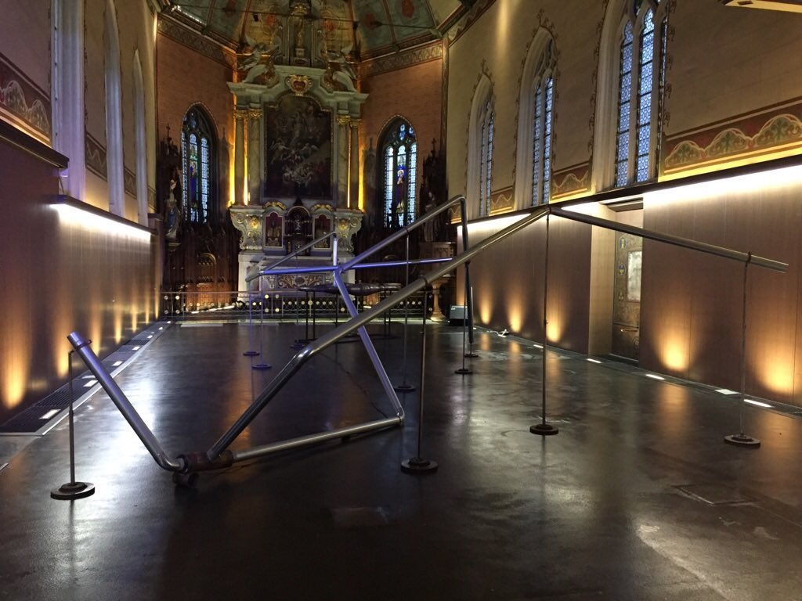
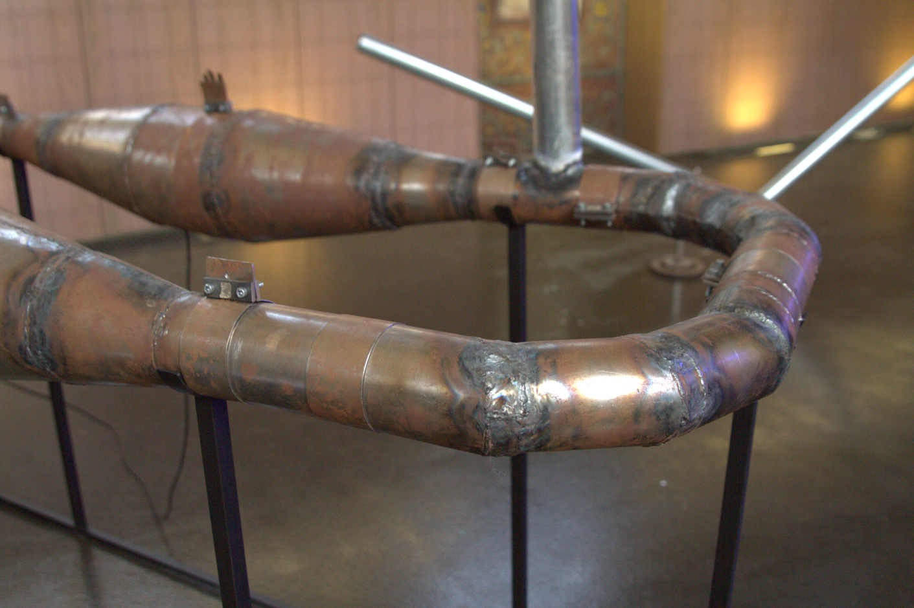
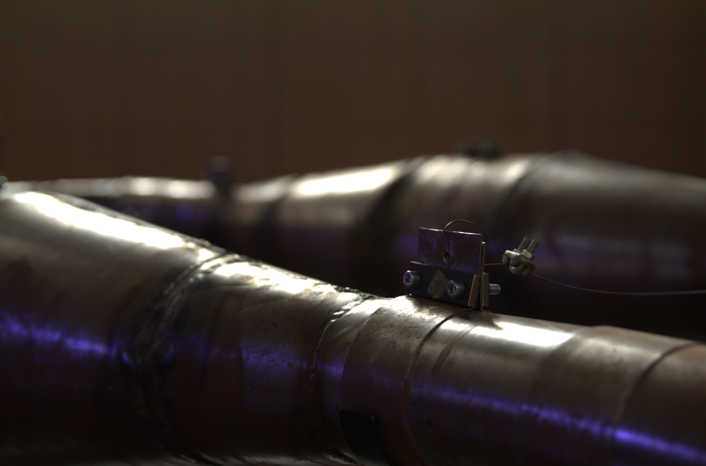
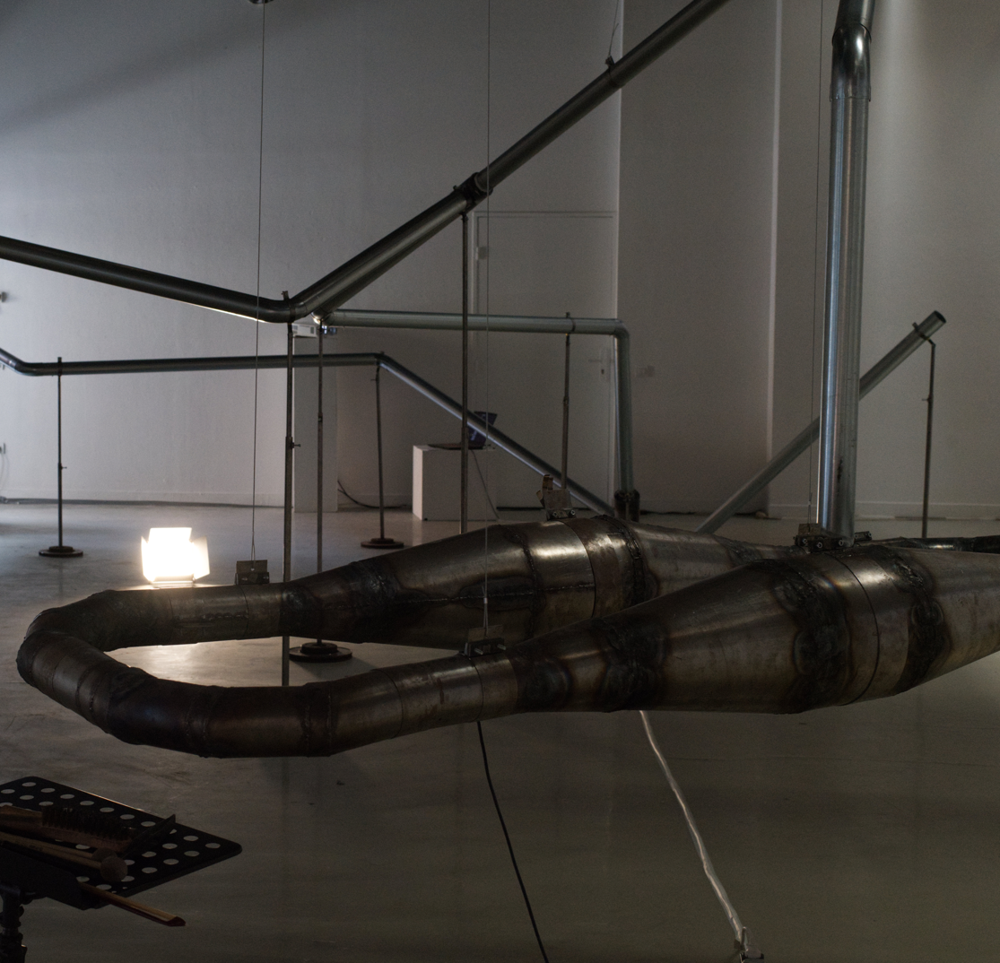
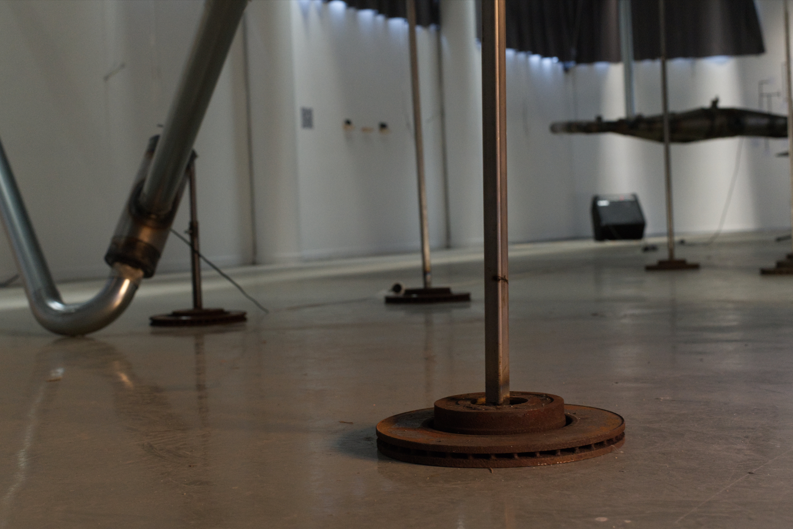
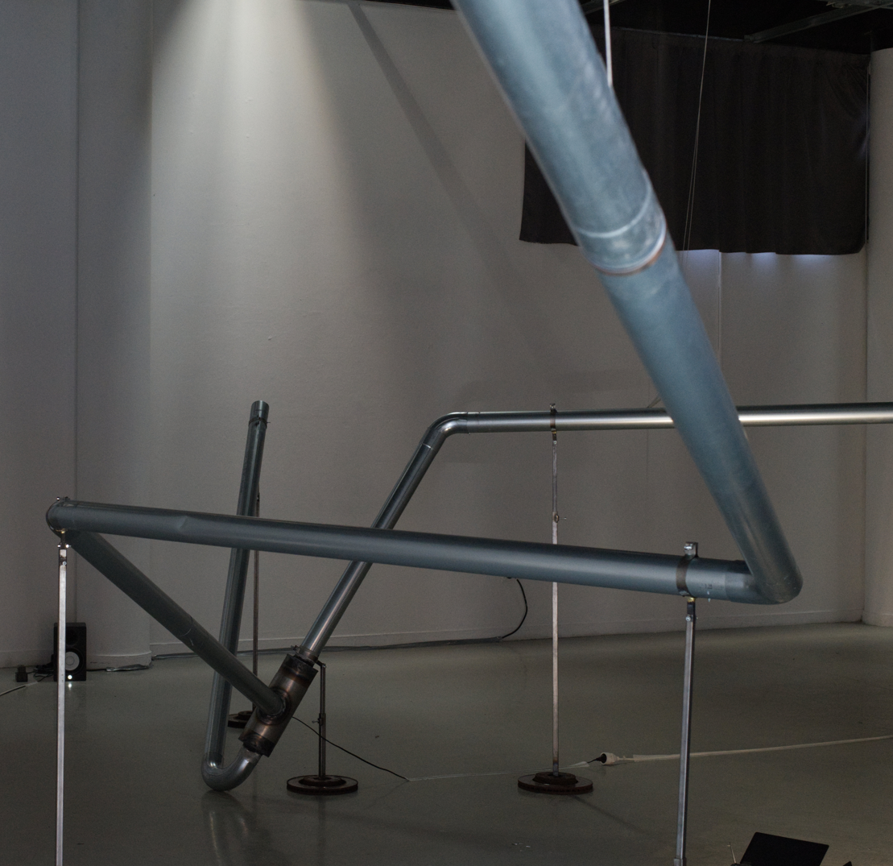

Ce projet est né de l’envie de faire de la musique et du son autrement qu’à travers les outils numériques que je maîtrise et dont j’ai l’habitude. Je me suis donc dirigé vers la sculpture sonore avec l’idée de créer un instrument de musique en métal. Cet instrument est utilisable de nombreuses façons par un « musicien ». Il possède également un système de moteurs percussifs intégrés permettant une forme sonore autonome.
Métal Préparé
2021-2023
Sculpture sonore, métal
Dimensions variables



Exposition « Où Atterrir ? », novembre 2023


